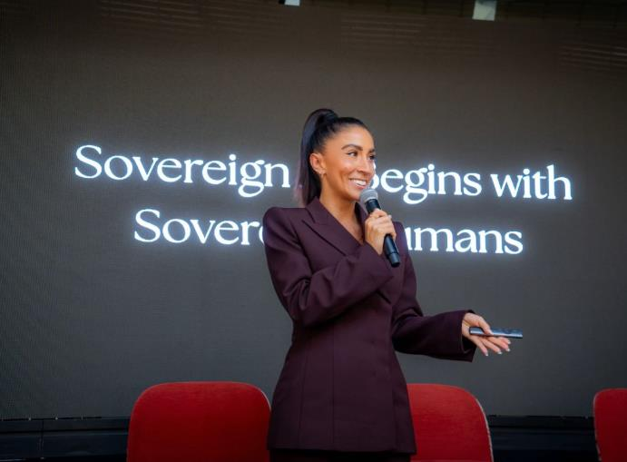
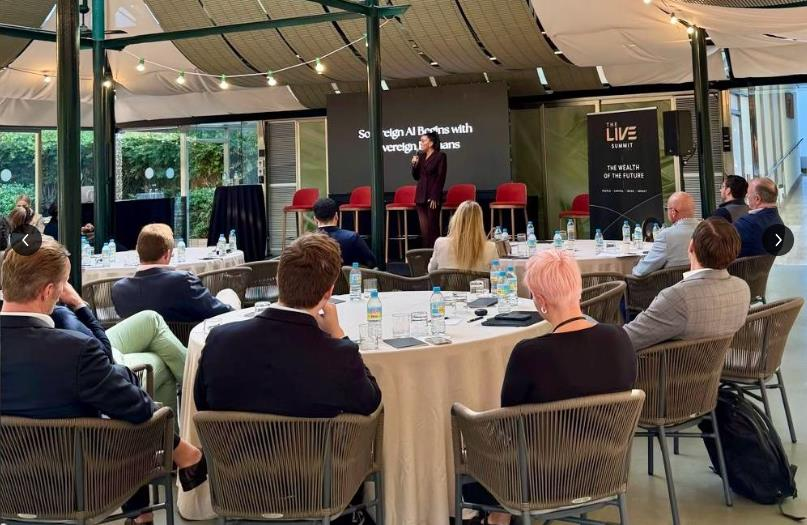
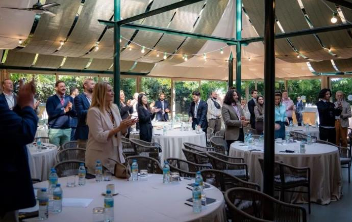

Grace Balev
Founder & CEO
a leadership infrastructure company advancing human sovereignty in the age of artificial intelligence.
LinkedIn ↗



Sovereign Leadership Infrastructure for the Age of AI
The world is entering an era where technological acceleration is outpacing human self-governance.
Artificial intelligence is not the fundamental crisis.
Human leadership is.
MASTERY. exists to strengthen human command in an era of accelerating technological power.
Through proprietary methodologies, executive advisement, enterprise calibration, and leadership technology, MASTERY. develops the internal architecture required for sovereign leadership, coherent decision-making, and sustainable performance under pressure.
This is not traditional leadership development.
It is sovereign leadership infrastructure for the age of AI.
See New EventsFounder & CEO
a leadership infrastructure company advancing human sovereignty in the age of artificial intelligence.
LinkedIn ↗Profile pending
Profile pending
Profile pending
Profile pending
Profile pending
Profile pending
Profile pending
Profile pending
Balev's current work is increasingly focused on what she identifies as one of the defining challenges of the technological age: the growing disparity between humanity's external capabilities and its capacity for internal self-governance.
As artificial intelligence accelerates the accessibility of knowledge, analysis, and decision-support capabilities, she argues that the distinguishing qualities of leadership will become increasingly human.
Wisdom. Discernment. Integrity. Consciousness. These capacities cannot be assumed to advance at the same pace as technology.
Balev advocates for a deliberate evolution in leadership development, one that places human sovereignty at the center of technological progress. Her perspective challenges leaders to consider not only what increasingly intelligent systems make possible, but whether the individuals directing those systems possess the internal command required to exercise their capabilities responsibly.
Her thesis is clear: We are facing a human consciousness crisis in the age of AI. Through MASTERY., Balev is developing the methodologies, infrastructure, and intellectual platforms intended to address that challenge.
See our servicesTestimonial pending
Testimonial pending
Testimonial pending
Testimonial pending
Testimonial pending
MASTERY. develops leadership infrastructure to strengthen self-governance, decision-making, and performance under pressure.
Founders, senior executives, and other leaders responsible for consequential decisions.
Yes. Use the request form to describe your organization, the team, and the outcomes you want to work toward.
They are a proprietary framework built around Posture, Purity, Precision, and Production.
MASTERY. focuses on the judgment, discernment, and self-command people need to direct increasingly capable technology.
Choose Speaking on the request form and include your event date, audience, and topic.
Find updates in News and upcoming gatherings in New Events.